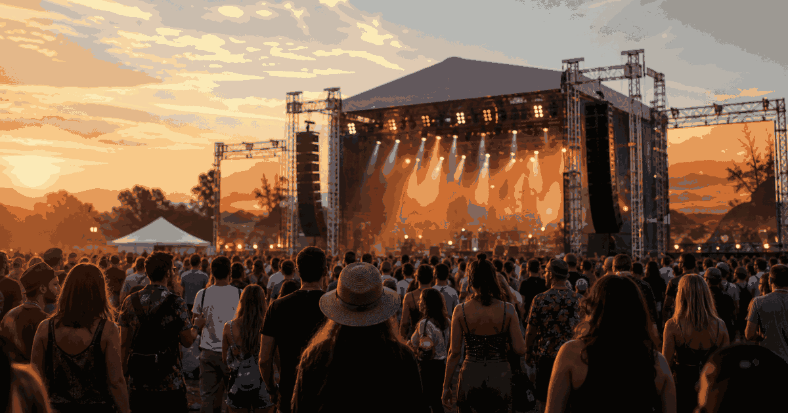

Cross-discipline gatherings and seasonal destinations
Festivals
Festivals connect art, music, carnival, food, light and tradition into short, place-based seasons where the city or landscape becomes the event.
Festival pull
MusicLargest live drawLineups, camping and city stages often define the travel plan.
CulturePlace identityCarnival, film, art and tradition make festivals highly local.
SeasonShort windowDates, weather and accommodation pressure matter more than usual.
Planning focus
Festival families
Music

Music FestivalsLineups, stages and destination weekends.
Wellness
Wellness FestivalsWorkshops, recovery, food rhythm and group atmosphere.

 MoreCategories
MoreCategoriesMore event families and calendar topics.
Festival Topics
Music Festivals
Festival weekends, headline calendars and destination lineups.
CarnivalStreet parades, masquerades and city-wide festival seasons.
Art Art
ArtBiennales, art fairs, gallery weeks and public art events.
Tradition Tradition
TraditionHeritage customs, seasonal rituals and local celebration days.
Wellness Festivals Wellness Festivals
Wellness FestivalsWorkshops, people, music, talks and house rules.